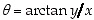
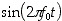
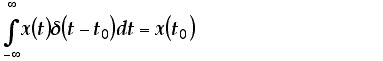
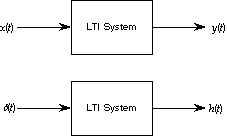
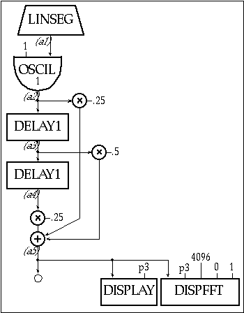
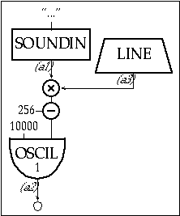

(20.7)
(20.7)
Click HERE to download chapter instruments.
Signal Processing has become a vital part of a modern engineer’s vocabulary. From earthquake retrofitting to direct-from-satellite TV broadcasts to chemical-process control, a knowledge of signal processing and dynamic systems has become essential to an engineer’s education. However, learning signal processing is often a dull exercise in performing integrations, summations and complex arithmetic. Csound has a number of features that make it valuable as an adjunct to the traditional course work. First, it was designed from the ground up to follow the principles of digital signal processing, although this fact is probably hidden from the casual user. Second, hearing a swept filter or an aliased sine wave brings the signal processing concepts home in an immediate and visceral way.
This chapter is an attempt to introduce the student of signal processing to the powerful examples available in Csound. It is also an attempt to introduce the concepts of signal processing to the Csound practitioner in the hopes that you will better understand why Csound does what it does and also be better able to make Csound do what you want.
Because all of the topics are interrelated, occasional use or mention is made of later topics in the derivation of earlier topics. I have tried to keep the order of presentation such that these forward references are minimized.
Even though Csound is very powerful, it will not do every sort of calculation that you might desire. Often you need to do some sort of symbolic or numeric calculation to figure out what values to use in Csound. These sorts of calculations are best done using a program like Mathematica, Maple, MathCAD, or Matlab. I have given some examples of these sorts of calculations using Mathematica to assist the interested reader. Just as you do not really need to know how to do long divisions in order to use a calculator, you do not really need to know calculus to use Mathematica to integrate.
A variable is a symbol for a quantity or thing that can change or vary. Common variables in algebra are x and y. Some of the variables used in this chapter are t (usually stands for time), T (a time interval or period), f (frequency of a continuous signal) and F (frequency of a discrete signal).
A function is the way one variable depends on (or relates to) another variable, e.g. in the equation:
(20.1)
The variable y is a function of the variable x. The function says ‘take whatever value x presently has, multiply it by three and add five to that result.’ That final result is the present value of y. Often, when one variable such as y is a function of another variable, such as t or n, but we do not know (or care) exactly what the function is, we write y(t) or y[u]. In spoken language we would read y(t) as y-of-t and y[n] as y-of-n. Three of the most common functions in signal processing are the sine of x (written as sin x), the cosine of x (written as cos x) and the exponential of x (written as ex or exp x). A function where y(-t) = y(t) (like y(t) = t2) is called an even function. A function where y(-t) = -y(t) (like y(t) = t) is called an odd function. Many functions are neither even nor odd.
If a variable is not a function of another variable it is called an independent variable, because it can vary in any way it pleases. If a variable is a function of another variable, it is called a dependent variable, because its value depends on the value of some other variable. In signal processing, in addition to being either independent or dependent, our variables are often complex.
A complex number is a mathematical shorthand for combining two independent numbers into one symbol. If the two independent numbers in our complex number are a and b, mathematicians would write the complex number as a + ib and engineers would write it as a + jb. For historical reasons, a is called the real part and b is called the imaginary part and i or j is called the imaginary unit. It is defined by j2 = -1. Engineers use j as the imaginary unit instead of i, because i is reserved for current. Mathematica uses 'I' for the imaginary unit.
If we have two complex numbers a + jb and c + jd, we can define the relationships for addition as the sum of the real parts and the sum of the imaginary parts:
(20.2)
and subtraction as the difference of the real parts and the difference of the imaginary parts:
(20.3)
If we think of a complex number as a point on a Cartesian coordinate system (a rectangular graph) we can define the distance from the origin to the complex number as the magnitude or absolute value of the complex number:
(20.4)
Figure 20.1 A complex number in both Cartesian and Polar form.
We can think of the angle between the positive x-axis and the line segment from the origin to the complex number as the angle (also known as the phase angle, or the phase or the argument) of the complex number:
(20.5)
The function arctan is the arctangent. It means the-angle-whose-tangent-is).
A complex number expressed as a magnitude and an angle is said to be in polar form. For signal processing it is usually most convenient to write the magnitude as r and the angle as , so that our complex number becomes, where r2 = a2 + b2 and .
With two complex numbers, and , in polar form, we can define multiplication as the product of the magnitudes and the sum of the angles:
(20.6)
We can define division as the ratio of the magnitudes and the difference of the angles:
(20.7)
There are formulas for multiplication and division using a and b instead of r and , but they usually make calculations much harder.
By analogy with complex numbers, the complex variable z contains two normal (real) variables x and y:
(20.8)
Again we call x the real part and y the imaginary part. We can (and usually do) express complex variables in polar form:
(20.9)
Where and , but r and are now variables instead of numbers.
A complex function or a function of a complex variable is made up of two normal functions, again a real part and an imaginary part. As an example, let us look at the function ez, since it is used so frequently in signal processing (we got ahead of ourselves and already used part of it in our definition of polar form).
(20.10)
So the real part of ez is the product of the exponential of x and the cosine of y, ex cos y and the imaginary part is the product of the exponential of x and the sine of y, ex sin y. In terms of polar form the magnitude of ez is ex and the angle is y. It may be worth noting that Mathematica treats almost all variables and functions as being complex. For example, Mathematica will evaluate Exp[I Pi/2] or Exp[3 + 2 I] as readily as Sin[Pi/2].
The symbol:
is a summation symbol. It means to take the index variable (the variable on the bottom, usually n), let it take on all integer values from the starting index (the number on the bottom) to the ending index (the number on the top), substitute the integer into the main expression and add up the values of all of the substitutions.
For example,
Integration and Differentiation
The symbol:
is the integration symbol. Mathematicians usually define an integral in terms of limits and infinitesimal. It is usually adequate to think of an integral as the area between a real function and the x-axis. A large part of a calculus class is devoted to learning how to evaluate integrals of functions.
Mathematica will integrate a large number of functions symbolically (meaning the result is a function) and almost any function numerically (meaning the result is a number). For example, the integral of the sine of x, which is written:
is evaluated symbolically in Mathematica as Integrate[Sin[x],x] and the integral of the cosine of x from 0 to p, which is written:
is evaluated numerically in Mathematica as Integrate[Cos[x],{x,0,Pi}].
The symbol:
is the derivative of the function y with respect to the variable x. Mathematicians again define derivatives in terms of limits and infinitesimal. It is usually adequate to think of a derivative as the slope of a function. A small part of a calculus class is devoted to learning how to take derivatives of functions.
Mathematica will evaluate the derivative of almost any function. For example, the derivative of the cosine of x with respect to x, which is written:
is evaluated in Mathematica by D[Cos[x],x].
A signal is a function of one or more independent variables. The purpose or use of a signal is to convey information. Examples of common signals are the voltage coming out of an audio amplifier, the Dow-Jones industrial average, the outside temperature, and the display on a computer screen, the output from a radio transmitter. Csound is structured for processing signals of a single independent variable, so we will restrict ourselves to signals that are a function of only one independent variable, either time or sample number.

Figure 20.2 A continuous-time signal.
Signals are divided into two classes, continuous-time and discrete-time. Continuous-time signals have a value at any instant of time. Most physical phenomena, such as the temperature, sound, or a person’s weight are continuous-time signals. Two continuous-time signals that are very important in signal processing are and . Engineers often use the Euler formula as a shorthand notation for representing these two signals at the same time:
(20.18)
where . One can get back to sines and cosines with:
(20.19)
and:
(20.20)
The signals , and are all periodic signals, meaning that for some value T, the signal x(t) = x(t+T). If f0 in , , or is not equal to 0, then the smallest positive value of T for which x(t) = x(t+T) is called the fundamental period, T0. . T0 = 1/|f0|. For an arbitrary periodic signal (where x(t) = x(t+T)), f0 is called the fundamental frequency.

Figure 20.3 A periodic signal.
In the abstract world of signals, a periodic signal like started before the dawn of time and goes on past the end of the universe. Those of us who are not deity do not have the patience to listen to such signals. Our signals have to have a start and an end. For us mere mortals, a reasonably long section of can be generated by:
Figure 20.4 Block diagram of instr 2001, a 440 Hz sinusoidal oscillator at full amplitude synthesized mathematically by solving for sin(x).
Figure 20.5 Orchestra and score code for instr 2001, a sine wave synthesizer as shown in figure 20.4.
instr
2001
; 440 hz sine wave at full amp
itwopi
=
2*3.141592653589793238
a1
phasor
440
a2
=
32767*sin(itwopi*a1)
out
a2
endin
i 2001
0
5
Csound has some special facilities for generating periodic signals, but we need to wait for a little more background before we fully understand how they work. Let us listen to the examples first and then learn how they work.

Figure 20.6 Block diagram of instr 2002, a simple Csound oscillator instrument.
instr
2002
; simple 440hz oscillator
aprd
oscil
32767, 440, p4
out
aprd
endin
; One period of a sine wave
f 1
0
8192
10
1
; One period of an approximate sawtooth wave
f 2
0
8192
10
1 0.5 0.333 0.25 0.2 0.1667 0.1429 0.125 0.111 0.1
; One period of an approximate square wave
f 3
0
8192
10
1 0 0.333 0 0.2 0 0.1429 0 0.111 0
; One period of an approximate triangle wave
f 4
0
8192
10
1 0 -0.111 0 0.04 0 -0.0204 0 0.0123 0 -0.0083 0 0.0059
i 2002
0
5
1
i 2002
6
5
2
i 2002
12
5
3
i 2002
18
5
4
Figure 20.7 Score code for instr 2002 with function for sine, saw, square and triangle called consecutively by each note.
Since for a periodic function, x(t) = x(t+T), we do not really have to let time go from the start to the end, we can just let time run from 0 to T and then start over. If we have a new variable, say t', defined as t' = t/T, then we can generate x(t) by letting t' run from 0 to 1 and then start over at 0.
The other class of signals, discrete-time signals, only has values at fixed instants of time. For example, the closing value of the Dow Jones industrial average is a discrete-time signal which only has a value determined at the closing bell (4 p.m. Eastern Time). In between the closing bells, the closing value is undefined. In other words, it makes no sense to talk about the closing-bell value at noon. Discrete-time signals are often represented graphically as "lollipop diagrams," where the height of the lollipop stick corresponds to the value of the signal at that time. The lollipop itself is meant to remind you that the function only has values at discrete points.
Because a discrete-time signal only has a value at discrete times, we can number these discrete times, e.g. t0, t1, t2, ... The values of the discrete-time signal, x, can then be represented as either x(t0), x(t1), x(t2), ..., or x[0], x[1], x[2], ..., where x[n] = x(tn) and n is called the index variable.
The natural representation of a signal in a computer is as a discrete-time signal. A computer has individual memory or storage locations, so the values of a discrete-time signal can be stored in successive memory locations. Csound has a lot of built-in facilities for generating and storing discrete-time signals.

Figure 20.8 A discrete-time signal.
The GEN routines (in the .sco file) all create discrete-time signals and store them in a section of memory known as a table. You use an index into a table to find a stored value of the function. You can store a complete discrete-time signal in the computer using a GEN routine and then generate the signal by indexing the table with the integers from 0 to table-length-1. Since tables can be of different lengths, it is sometimes easier to say you want a value halfway through the table or three-quarters of the way through the table, instead of at index 4095. The Csound opcode table lets you access the table either way. The line:
a1
table
73, 1, 0
will assign a1 the value at index 73 in function table (f-table) 1. The line:
a2
table
0.25, 2, 1
will assign a2 the value one quarter of the way through f-table 2.
One advantage of table is that you do not have to access the values in order. If you access the table in reverse order, you will have the function going in reverse. You can access the table in any sort of order and create a different signal for each order of access.
In order to access the entire table you need some way to generate all of the integers from 0 to the table-length-1, at a fixed rate. The Csound opcode phasor generates normalized indices (that run from 0 to 1) at a rate you specify. You can either multiply the output of phasor by the table length, or set it to use normalized indices. The phasor opcode generates indices that run from 0 to 1 and then it resets back to 0 and repeats. It behaves just like we wanted our variable t' to behave.
There are two ways to change the frequency of a waveform stored in a table. You can change the length of time between samples, or you can change the number of samples skipped between times. Csound uses the latter approach. For example, if you keep the sampling rate the same, but only use every other sample, you double the frequency. If you use every third sample, you triple the frequency. That is essentially how phasor works. It uses the specified frequency to determine the size of jump it will take in a table.
We can create a discrete-time periodic signal by using the output of phasor to index a table containing one period of our periodic signal. In fact, the Csound opcode oscil combines a phasor with a table. To summarize, you can generate a discrete-time periodic signal in Csound by filling a table with one period of a function and then using either a phasor -table pair or an oscil.
A natural question then arises: How can one convert a discrete-time signal such as the output from Csound into a continuous signal, such as a sound? Or how can one convert a continuous-time signal such as a sound into a discrete-time signal, such as an .aif file? Under a very specific criterion, known as the sampling theorem, these tasks can be accomplished exactly, without the loss or addition of any information. But before we discuss the sampling theorem, we have a few additional topics to cover.
It was discovered long ago that any reasonable periodic signal (one that has a maximum value less than infinity and a finite number of wiggles or jumps in a period) can be represented as a weighted sum of integrally-related (meaning that the frequencies are related by integers) sines and cosines or complex exponentials. This weighted sum is known as a Fourier series and the weightings are known as the Fourier coefficients. Mathematically, the periodic signal x(t) is given by the sum:
where the summation is the Fourier series and the ak are the Fourier coefficients. If the periodic function is an even function, the complex exponentials can be rewritten as cosines:
If the periodic function is an odd function, the complex exponentials can be rewritten as sines:
The can be calculated by evaluating the integral of the product of the function and the appropriate complex exponential over one period and dividing by the period. Mathematically:
A set of sines, cosines or complex exponentials, where the frequencies are related by fk = kf0, where are said to be harmonically related and the individual terms are called the harmonics or partials. The terms where are called the fundamental harmonic or fundamental. The terms where are called the second harmonic or second partial. The terms where are called the third harmonic or third partial and so forth. Much of the tone quality or timbre of a musical note is governed by the number and relative strengths of the harmonics in the note. As an interesting side-note: the ak can be thought of as a discrete-time signal.
The Csound function generators, GEN9, GEN10 and GEN19 are designed to create a table with one period of a periodic function from the Fourier coefficients. They differ in the amount of detail you have to specify about each harmonic. As an example, a sawtooth wave (which is an odd function) has the following Fourier series:
(20.25)
and the Fourier coefficients are given by:
(20.26)
Since the GEN routines automatically rescale the functions, we can ignore the and just use 1/k as the Fourier coefficients. The first ten coefficients are 1, 1/2, 1/3, 1/4, 1/5, 1/6, 1/7, 1/8, 1/9 and 1/10. The more terms we include, the closer we get to a sawtooth wave. In Csound we would include the following line in the score file to create a table with one period of an approximate sawtooth wave.
f 2
0
16384
10
1 0.5 0.3333 0.25 0.2 0.1667 0.1429 0.125 0.1111 0.1

Figure 20.9 Sawtooth Fourier coefficients.
Other common periodic signals are the square wave:
(20.27)
f 1
0
16384
10
1 0 0.3333 0 0.2 0 0.1429 0 0.1111 0
The triangle wave:
(20.28)
f 3
0
16384
10
1 0 -0.1111 0 0.04 0 -0.0204 0 0.0123 0 -0.0083 0 0.0059
If your calculus is not really sharp, you can use a program such as Mathematica to calculate the Fourier coefficients for you. You still have to come up with an expression for one period of the periodic function. But Mathematica will then calculate the Fourier series and the Fourier coefficients.
Figure 20.10 Square wave Fourier coefficients.

Figure 20.11 Triangle wave Fourier coefficients.
For example, one period of a sawtooth wave is described by y = -(2x + 1). The following Mathematica commands will give you the first ten terms of the Fourier series and also give you the first ten coefficients.
<<Calculus 'Fourier Transform'
y=-(2x-1)
FourierTrigSeries[y,{x,0,1},10]
Table[Pi/2 FourierSinSeriesCoefficient[y,{x,0,1},n],{n,1,10}]
Not all signals are periodic. It turns out that even aperiodic continuous-time signals can be constructed from the sum of sines and cosines or complex exponentials. However, we need the weighted sum of sines and cosines or complex exponentials at all possible frequencies, instead of at just harmonically related frequencies. The mathematical way to sum lots of little bits right next to each other is to integrate. Instead of the discrete ak we had for the Fourier series, we now have a continuous function of frequency, so the continuous-time signal x( t ) can be constructed from the weighted sum of all frequencies with the weighting function being X( f ), i.e.:
(20.29)
We can evaluate X( f ) from x( t ) with the formula:
(20.30)
The equation for calculating X( f ) is called the Fourier Transform. The equation for reconstructing x( t ) from X( f ) is called the Inverse Fourier Transform. The importance for us in these transforms is that we now have two ways of looking at a continuous-time signal. We can look at it as a function of time (time domain), or as a function of frequency (frequency domain). Since humans hear the pitches of notes as a function of frequency and not as functions of time, the frequency domain is often a valuable place to examine musical signals.
Plotted below is the function:
(20.31)
and its Fourier transform. The plots were generated with Mathematica from the following instructions:
<<Calculus`FourierTransform`
foft=UnitStep[t]Exp[-t]
fofw=FourierTransform[foft,t,w]
foff=fofw/.w->2 Pi f
Plot[foft,{t,-5,5}]
Plot[Abs[foff],{f,-5,5}]
Plot[Arg[foff],{f,-5,5}]

Figure 20.12 The function of time.

Figure 20.13 The magnitude of its Fourier transform.

Figure 20.14 The phase of its Fourier transform.
For discrete-time or sampled signals, the discrete-time Fourier transform is calculated as:
(20.32)
where the frequency F is given as a fraction of the sampling frequency. X( F ) is a continuous periodic function with a period of 1. The inverse transform is:
(20.33)
The integration is performed over any range of F with a length of 1, e.g. 0 to 1 or -1/2 to 1/2. We will make use of both of these formulas in the section on filters.
Because the Fourier transform can consist of complex numbers, it is customary to plot functions in the frequency domain as a plot of magnitude (or absolute value) versus frequency and phase (or phase angle or argument) versus frequency. Csound has a built-in function for plotting the magnitude of a Fourier transform but not the phase. The opcode dispfft and the analysis program pvanal use the Fast Fourier Transform (FFT), which is a very efficient method for calculating a sampled version of the discrete-time Fourier transform.
An aperiodic signal with a special place in signal processing is the impulse, . A continuous-time impulse is a strange limiting case of taking a signal, like a rectangular pulse and making it narrower and narrower, while increasing the height in such a way that the area remains constant. The true impulse (like the ideal fashion model) is infinitely tall and infinitely thin but has an area of 1. The discrete-time impulse, , is much simpler. It is a single sample of value 1 surrounded by zeros.
The impulse has several properties that make it useful. The first is its sampling property. You can find the value of a function at a given time or index , with the following formulas: the integral (or sum) of the product of the impulse and a function is the value of the function at the impulse’s time, i.e.:
(20.34)
or
 (20.35)
(20.35)
This property is most useful in designing FIR filters (described below). The second property is the impulse’s frequency content. The Fourier transform of the impulse is a constant, i.e.:
 (20.36)
(20.36)
or
(20.37)
In other words, an impulse contains all possible frequencies in equal strength. That property makes it ideal for testing filters and evaluating their performance.
Figure 20.15 The discrete-time impulse.
Figure 20.16 The Fourier transform of the discrete-time impulse.
You cannot really hear an impulse. But you can hear the impulse response of your computer and sound system (I will explain what an impulse response is a little later). The following Csound code will generate an impulse to let you hear the impulse response of your computer and sound system.

Figure 20.17 Block diagram of instr 2003, an instrument which generates an impulse and displays it in both the time and frequency domains to let you hear and measure the impulse response of your system.
kr
=
44100
; Avoid problems.
instr
2003
; SINGLE IMPULSE
idur1
=
7/sr
; Read the table once.
idur2
=
1/sr
ifreq
=
sr/8
; Read the Table at one point per
sample.
a1
linseg
ifreq, idur1, ifreq, idur2, 0, 1, 0
a2
oscil
32768, a1, 1
; Scale the amplitude so you can
hear it.
out
a2
display
a1, p3
; Display the impulse response.
dispfft
a1, p3, 4096, 0, 1
; Display the frequency response.
endin
; Create
a table
with an impulse in the
second position.
f 1
0 8 2 0
1 0 0 0 0 0 0
; Play the impulse and wait.
i 2003
0
0.2
Figure 20.18 Orchestra and score code for instr 2003 that generates a single impulse and displays the impulse and frequency response.
Often one does not want an impulse with all possible frequencies, but rather a periodic or pitched signal with all of the harmonics at equal strength. A train of impulses will have the desired characteristics. Unfortunately, in a sampled system, the period of a pulse-train must be an integer multiple of the sampling period, which greatly limits the frequencies that can be used. Csound provides a way around this limitation. The opcode buzz is designed to provide a signal with equal-strength harmonics for any desired frequency. The following Csound instrument will give you a buzz.
Figure 20.19 Block diagram of instr 2004, an instrument which generates a pitched "impulse train" using Csound’s buzz opcode.
instr
2004
; pitched Pulse train
iharm
=
int(44100/(p4>p5 p4:p5)/2)-1
; max harm w/o alias
a1
linseg
0, 0.05, 30000, p3-0.1, 30000, 0.05, 0, 1, 0
afreq
expon
p4, p3, p5
a2
buzz
1, afreq, iharm, 1, -1
out
a1*a2
endin
f 1
0
16384
10
1
i 2004
0
6
10
20
i 2004
6
6
20
40
i 2004
12
6
40
80
i 2004
18
6
80
160
i 2004
24
6
160
320
i 2004
30
6
320
640
Figure 20.20 Orchestra and score code for instr 2004, an instrument which generates a sweeping train of impulses with all the harmonics at equal strength.
As the frequency sweeps from 10 Hz to 640 Hz you should hear the transition from individual clicks to a buzzing sound. The transitions (the car shifts) are because one has to specify the number of harmonics in buzz and the maximum number allowed without aliasing (explained below) decreases with increasing frequency.
Often a signal will have one or more frequency ranges where there is no information, which means that X( f ) = 0. Such a signal is called band-limited, meaning the information content is limited to certain frequency ranges or bands.
Figure 20.21 A band-limited signal.
With this background we are ready to tackle converting continuous signals to discrete signals and back. The Sampling Theorem states that a band-limited continuous signal with X(f) = 0 for |f| > fM is uniquely determined by its samples, if the sampling frequency is at least twice the band-limited frequency, fs > 2fM, where the sampling frequency is the reciprocal of the sampling period fs = 1/Ts. The original signal, x( t ), can be reconstructed from its samples by generating an impulse-train whose amplitudes equal the sample values and passing the impulse-train through an ideal lowpass filter with a gain of Ts and a cutoff frequency greater than fM and less than fs - fM.
The analog-to-digital (ADC) and digital-to-analog (DAC) converters in your computer or sound card usually handle the details of converting from a continuous signal to a discrete signal and back again. Most ADC’s have filters on them to remove any frequency content higher than one-half the sample rate. When recording a signal into a computer then, one normally does not have to worry about making sure that the signal is band-limited.
However, when generating or processing a signal inside the computer one has to be careful not to generate any frequency content above one-half the sample rate. Csound has absolutely no built-in protection against this. There is in fact no general way for protection against this.
If you generate a frequency above one-half of the sampling rate and attempt to play it, the actual frequency you hear will depend upon just how high above one-half the sampling rate the frequency is. For frequencies between 1/2fs and fs, the frequency you will hear is fs - f. For frequencies between fs and 3/2fs, the frequency you will hear is f - fs. The pattern repeats.
This reappearance of a high frequency as a much lower frequency is called aliasing, (i.e. the high frequency appears as its low-frequency alias). The following Csound code illustrates aliasing:
Figure 20.22 Block diagram of instr 2005, an instrument designed to illustrate the sounds and concepts of aliasing.
instr
2005
; aliasing
a1
linseg
0, 0.01, 20000, p3-0.01, 20000, 0.01, 0, 1, 0
a2
expon
20, p3, 176400
a3
oscil
a1, a2, p4
out
a3
endin
; sine
f 1
0
8192
10
1
; square
f 2
0
8192
10
1000 0 333 0 200 0 143 0 111 0 91 0 77 0 67 0 59 0 53 0
; sawtooth
f 3
0
8192
10
1000 500 333 250 200 167 143 125 111 100 91 83 77 71 67 63 59 56 53 50
; impulse-like
f 4
0
8192
10
1 1 1 1 1 1 1 1 1 1 1 1 1 1 1 1 1 1 1 1
i 2005
0
20
1
i 2005
21
20
2
i 2005
42
20
3
i 2005
63
20
4
Figure 20.23 Orchestra and score code for instr 2005, an instrument whose frequency moves from 20 Hz to 176,400 Hz — 4x the sample rate.
The result sweeps the waveform from 20 Hz to 176,400 Hz, which is four times the sample rate. Humans cannot hear sounds at 176,400 Hz, but you will hear the alias of 176,400 Hz quite clearly. For the sine wave you should be able to hear the pitch sweep up and down four times. For the others, you will hear the partials sweep up and down repeatedly before the fundamental starts to sweep back down. For the buzz wave, all of the harmonics are the same strength so you will hear an audio mess.
Figure 20.24 Aliasing.
Aliasing is neither a good nor a bad thing. However, If you are not expecting it, you can generate "noise" (my definition of "noise" is any sound that you do not want to hear). It is best not to depend on aliasing in a Csound instrument, because changing the sampling rate will dramatically change the sound. Another way to think about aliasing is that the discrete-time frequency, F = f / fs, only has a useful range from -1/2 to 1/2. Any frequency generated outside this range will be aliased back into this range. The most common causes of aliasing in Csound are sampling a table too rapidly or having too high a modulation index in a modulating scheme such as FM (discussed below).
A system is anything that takes an input signal and transforms it into an output signal. Systems are normally classified as either linear or non-linear and time-invariant or time-varying. A time-invariant system is one in which a given input causes a given output no matter when the input occurs. For example, consider a doorbell as a system with a push on the button as the input and the ringing sound as the output. It does not matter when you push the button, the bell will still ring, so the system is time-invariant. However, if you consider the system to be the doorbell, the residents and the front door, taken all together as the system, this new system is time-varying, i.e. the response that you get to a push on the doorbell depends very much on the time of day. Mathematically a system is time-invariant if the input x(t - t0) gives rise to the output y(t - t0).
A linear system is one in which the output is directly proportional to the input. Most doorbells are not linear because pushing the button twice as hard does not cause the bell to ring twice as loud. A properly functioning grocery clerk is a linear system because they will charge you twice as much for two boxes of corn flakes and they will charge you the sum of three times the price of one box of corn flakes and twice the price of one doughnut if you buy three boxes of corn flakes and two doughnuts.
Mathematically, a linear system has the following properties: if x1(t) and x2(t) are inputs to a system, a and b are constants and y1(t) is the system response to x1(t) and y2(t) is the system response to x2(t), then the system is linear if the response to ax1(t) + bx2(t) is ay1(t) + by2(t).
From a design and analysis standpoint, linear time-invariant systems are the most useful because you can predict their behavior from very limited information. Most of the rest of this chapter will be concerned with linear time-invariant (LTI) systems.

Figure 20.25 Block diagram of linear time-invariant systems in the time and frequency domains.
If you input an impulse into an LTI system you will get an output signal called the impulse response, h(t), for continuous systems and h[n] for discrete systems. It has been proven that you can get the response to any input signal, x(t), from the impulse response by convolution of x(t) with h(t). The symbol for convolution is usually the asterisk — "*." For continuous signals:
(20.38)
For discrete signals:
(20.39)
For discrete systems with short impulse responses, the convolution sum is fairly easy to program and runs quite quickly. However, for long impulse responses, such as reverberation in a cathedral, the speed and memory requirements for convolution become quite overwhelming. Most people do not have the mathematical background to perform the convolution integral for continuous signals and we have found that even among those that do, relatively few enjoy performing the integration. It would be nice if there was an easier way. A special property of sines, cosines and complex exponentials provides such a way.
Sines, cosines and complex exponentials are eigen functions of LTI systems, which means that the output from a complex exponential input is a complex exponential with exactly the same frequency. However, the output is multiplied by a (possibly complex) constant. In other words, for an input of you get an output of , where is a constant that depends on f but not on t. Since we learned above that any reasonable signal can be constructed from a weighted sum (or integral) of complex exponentials, we can find the response of an LTI system as:
(20.40)
For discrete-time systems the result is Y(F) = H(F)X(F). You may have guessed by now that H(F) is the Fourier transform of the impulse response, h(t). H(f) is the transfer function or frequency-response function of the system. In other words, multiplication in the frequency domain corresponds to convolution in the time domain. The procedure then is to take the Fourier transform of the input signal and the impulse response, multiply the two transforms and take the inverse transform of the result to get the output signal.
The following Csound orchestra and score can be used to find the impulse response and the frequency response of an LTI Csound opcode or section of code.

Figure 20.26 Block diagram of instr 2006, an instrument designed to find the impulse and frequency response of a linear time-invariant opcode (reson).
instr
2006
; impulse response of reson filter
idur1
=
7/sr
; read the table once
idur2
=
1/sr
ifreq
=
sr/8
; read the table at 1 point per sample
a1
linseg
ifreq, idur1, ifreq, idur2, 0, 1, 0
a2
oscil
1, a1, 1
a3
reson
a2, sr/10, sr/200
; the system under test
out
a3
display
a1, p3
; display the impulse response
dispfft
a3, p3, 4096, 0, 1
; display the frequency response
endin
; create a table with an impulse in the second position
f 1
0
8
2
0 1 0 0 0 0 0 0
i 2006
0
0.185759637
; create 2^14 (8192) samples
Figure 20.27 Orchestra and score code for instr 2006, an instrument which generates an impulse response of a reson filter.
The opcode convolve and its analysis utility companion, cvanal, implement frequency-domain convolution. The cvanal utility takes the Fast Fourier Transform of a soundfile, creating a frequency-response function (the soundfile is assumed to be the impulse response of some system or filter). The convolve opcode takes the frequency-response function, multiplies it by the Fourier Transform of the input signal and takes the Inverse Fourier Transform.
The following Csound code is designed to do that comparison. Note: because Csound’s analysis files are machine specific (you cannot use PC analysis files on a Mac or vice versa) the impulse responses on the accompanying CD-ROM must be pre-analyzed by the Csound cvanal utility before they can be used for convolution.

Figure 20.28 Block diagram of instr 2007, an instrument designed to do a comparison test and measure the impulse and direct implementation frequency response of an LTI opcode and the convolution method as shown in figure 20.29.
Figure 20.29 Block diagram of instr 2008, an instrument designed to compare the impulse and frequency response of the convolution opcode with the direct method shown in figure 20.28.
instr
2007
; Direct implementation test
iharm
=
int(44100/(p4)/2)-1
; avoid problems with delays
abuzz
linseg
0,0.45*p3,0,0.1*p3,10000,0.44*p3,10000,0.01*p3,0,1,0
aran
linseg
0, 0.01*p3, 10000, 0.44*p3, 10000, 0.1*p3, 0, 1, 0
a2
buzz
abuzz, p4, iharm, 1, -1
a3
trirand
1
a4
=
a2+a3*aran
a5
reson
a4, sr/100, sr/5000
; Same as test impulse
a6
balance
a5, abuzz+aran
out
a6
display
a6, p3/5
; display impulse response
dispfft
a6, p3/5, 4096, 0, 1
; display frequency response
endin
instr
2008
; Convolution test
iharm
=
int(44100/(p4)/2)-1
abuzz
linseg
0,0.45*p3,0,0.1*p3,10000,0.44*p3,10000,0.01*p3,0,1,0
aran
linseg
0, 0.01*p3, 10000, 0.44*p3, 10000, 0.1*p3, 0, 1, 0
ahalt
linseg
0, 8192/44100, 0, 0.001, 1, p3, 1
a2
buzz
abuzz, p4, iharm, 1, -1
a3
trirand
1
a4
=
(a2+a3*aran)/1.1
a5
convolve
a4, "reson_100_5000.con"
; Use cvanal to make
adely
delay
abuzz+aran, 8192/sr
a6
balance
a5, adely
out
a6
display
a6, p3/5
; display impulse response
dispfft
a6, p3/5, 4096, 0, 1
; display frequency response
endin
f 1
0
16384
10
1
; sine table
i 2007
0
6
110.25
i 2008
6
6
110.25
Figure 20.30 Orchestra code for instr 2007 and 2008, a direct implementation of an instrument that generates an impulse and measures the time and frequency responses(2007) and a convolution instrument for comparison(2008).
Csound has some other facilities for performing frequency-domain convolution but they are somewhat hidden. The interested reader is directed to pvoc and pvanal, as well as the spectral data types.
For continuous-time signals and systems, the behavior of the systems is often based on linear constant-coefficient differential equations. For discrete-time signals and systems, systems are often described by constant coefficient difference equations. The general form of a constant-coefficient difference equation is:
(20.41)
If one assumes that the system is initially at rest, one can calculate the frequency response and the impulse response from the difference equation in the following way: The discrete-time Fourier Transform of the difference equation is:
(20.42)
which can be rearranged to:
(20.43)
The impulse response is then found from the inverse Fourier transform of H(F).
The difference equations are often represented by block diagrams in the following form:
means 
means
means
Figure 20.31 Typical figures and form of block diagrams used to represent difference equations.
A circle with a plus sign is a summation operator. The D is a delay operator. It corresponds to shifting the index from n to n - 1. The coefficient by the arrow corresponds to multiplication by the coefficient.
We can rewrite Equation(20.41) as a block diagram:
Figure 20.32 The block diagram of equation 20.41.
The coefficients by the arrows correspond to multiplication by the coefficients in the previous equation.
If all of the ak are zero, except for a0, then the output only depends on the present and past inputs and not on the past outputs. The impulse response of such a system returns to zero after the impulse has passed through the Mth input. Such a system is said to have a finite impulse response, because the impulse response has a finite duration and the system is known as an FIR system. If any of the ak are not zero, then, in general, the impulse response never truly returns to zero, although it may get very small. These systems have feedback because the present value of the output depends on all of the previous ones. Such a system is said to have an infinite impulse response and is known as an IIR or recursive system (because of the feedback).
A system is said to be stable if a finite or bounded input produces a finite or bounded output. One can determine the stability of a system by examining the roots of the equation obtained, by replacing the factors of  with z-1, e.g. , setting the denominator of the transfer function to zero and solving for
with z-1, e.g. , setting the denominator of the transfer function to zero and solving for  . If the magnitudes or absolute values of all of the roots are less than 1, the system is stable. If the magnitude of any of the roots is greater than 1 the system is unstable. As an example, take the system with the transfer function:
. If the magnitudes or absolute values of all of the roots are less than 1, the system is stable. If the magnitude of any of the roots is greater than 1 the system is unstable. As an example, take the system with the transfer function:
(20.44)
First, replace the factors of  with z-1.
with z-1.
(20.45)
Then, set the denominator equal to zero.
(20.46)
Solve the equation for z.
(20.47)
Check the magnitudes.
(20.48)
Since at least one (in this case both) of the roots has a magnitude greater than 1, the system is unstable.
The transfer function of an FIR system has no denominator and so it is always stable. In Csound, an unstable system usually shows up as having infinity (INF) appear as the magnitude of the largest sample.
A filter is a system with a specified or pre-determined frequency response. The usual purposes of a filter are either to remove undesired frequencies or emphasize desired ones. The four classic types of filters are lowpass, highpass, bandpass and bandreject or notch. For musical purposes one usually includes parametric equalization filters, shelving filters, comb filters and allpass filters. Filters can be divided up into FIR or IIR filters. For a given response, IIR filters require fewer elements or operations but cause non-linear phase shifts. FIR filters require many more elements but can be specified with linear phase shifts.
Figure 20.33 Ideal versions of the four "classic" filters.
Csound has several built-in filters. The tone, atone, reson and areson opcodes are all IIR filters. The butterlp, butterhp, butterbp and butterbr are second-order IIR filters. Both sets implement the four classic filter types. The lpread/lpreson (lpfreson) opcodes implement very-high order (up to 40 or 50) IIR filters from predefined tables of filter coefficients. The comb and alpass opcodes implement comb and allpass filters.
The impulse and frequency responses for tone are shown below. As shown above, the impulse responses can be used with convolve to compare direct implementation with convolution.

Figure 20.34 Impulse response for tone ((KHP=fs/100). An impulse response plots the amplitude (or intensity) of the output from a filter when the input is an impulse. In this case, the output decays exponentially with time.
Csound also provides some tools for generating filters from scratch. Discrete-time filters are usually constructed from difference equations as discussed above. However, the most difficult task in constructing a filter is determining the coefficients in the difference equation. The task is similar to fitting a polynomial to an arbitrary function. Csound has no built-in facilities for calculating the coefficients. You have to do that yourself. (I will give you some hints on how, after we finish discussing how to implement a filter in Csound). However, once the coefficients are calculated, Csound does provide facilities for implementing the filter.

Figure 20.35 Frequency response for tone (khp=f/100). A frequency response plot shows how a given system or filter amplifies or attenuates a signal as you change its frequency. It also shows how the signal’s phase would change as you change its frequency. In this case, the gain is constant up to about 441 Hz. Above 441 Hz the gain drops with frequency. The phase shift is almost 0° at low frequency and drops to —180° at 1/2 of the sampling rate.
The delay1 opcode in Csound is the same as the D operator in the block diagrams shown in figures 20.31 and 20.32 and is useful for creating FIR filters. Filters longer than about 20 delays are unwieldy and are better implemented with convolve. The following example demonstrates implementing an FIR filter from scratch.
The difference equation:
(20.49)
is an FIR system and has the frequency response:
(20.50)
which is basically a linear-phase lowpass filter. A Csound instrument to implement and test this filter is:

Figure 20.36 Block diagram of instr 2009, an instrument that implements and tests the FIR filter defined in equation 23.49.
kr
=
44100
; avoid assorted problems
instr
2009
; FIR Filter Example
a1
linseg
sr/8, 7/sr, sr/8, 1/sr, 0, 1, 0
a2
oscil
1, a1, 1
; Generate an impulse
a3
delay1
a2
; Filter delay 1
a4
delay1
a3
; Filter delay 2
a5
=
0.25*a2+0.5*a3+0.25*a4
; Summation
out
a5
display
a5, p3
; display impulse response
dispfft
a5, p3, 4096, 0, 1
; display frequency response
endin
; create a table with an impulse in the second position
f 1
0
8
2
0 1 0 0 0 0 0 0
i 2009
0
0.185759637
; create 2^14 (8192) samples (a nice FFT #)
Figure 20.37 Orchestra and score code for instr 2009, a simple lowpass design implemented by delaying, scaling and summing the input signal with the scaled delayed copies of the original.
The difference equation:
(20.51)
which can be rewritten as:
(20.52)
is an IIR system and has the frequency response:
(20.53)
which is sort of a bandpass-highpass response. A Csound instrument to implement and test this filter (thanks to Russell Pinkston) is:
instr
2010
; IIR Filter Example
a1
linseg
sr/8, 7/sr, sr/8, 1/sr, 0, 1, 0
a2
oscil
1, a1, 1
; Generate impulse
aprev1
init
0
; init y(n-1) to 0
aprev2
init
0
; init y(n-2) to 0
ainput
=
a2
; y(n) = a0x(n)-b1y(n-1)-b2y(n-2)
aoutput
=
1*ainput-0.5*aprev1-0.5*aprev2
aprev2
=
aprev1
aprev1
=
aoutput
out
aoutput
display
aoutput, p3
; display impulse response
dispfft
aoutput,p3,4096,0,1
; frequency response
endin
; create a table with an impulse in the second position
f 1
0
8
2
0 1 0 0 0 0 0 0
i 2010
0
0.185759637
; create 2^14 (8192) samples
Figure 20.38 Orchestra and score code for instr 2010, an IIR bandpass filter based on equation 20.52.
Always check a IIR filter built from scratch, for stability. It is very easy to make an unstable IIR filter. In using filters in musical applications, it is common to change the filter parameters, such as the cutoff frequency or the bandwidth during a note. Strictly speaking, if you change the parameters with time, the filter is no longer time-invariant and the analysis techniques we have discussed no longer apply. However, if the changes are slow compared with the fundamental frequency of the note, approximating the filter as an LTI system is usually adequate.
Designing an IIR filter to meet specified performance characteristics is a little beyond what we can do in one chapter. The interested reader is directed to the references. Designing an FIR filter can also be quite involved. However there is one relatively straightforward method which uses the techniques we have discussed up to this point.
The first step is to plot or sketch the magnitude of the desired frequency response. As mentioned under the heading The Fourier Transform above. The discrete-time frequency response must be a periodic function, so we have to sketch or plot one full period of the function. A plot of one period of an ideal lowpass filter with a cutoff frequency of 1/8 (Remember the useful range of F is from 0 to 1/2) is given below.

Figure 20.39 Plot of one period of an ideal lowpass filter with a cutoff frequency of 1/8.
The next step is to decide how many points to include in the filter. It should be an odd number. The larger the number the better the filter, but the more work you will have to do. Next, for calculation purposes you need to find the index range. For example, for a 5-point filter, the index range is from -2 to 2. For a 15-point filter the index range is from -7 to 7. Call the ending index N.
With the index range in hand you need to calculate the Inverse Fourier Transform for the points in the index range using the equation above. The result will be a set of raw filter coefficients, a[n]. Because our filter uses only a finite number of points we will have to smooth the coefficients. We will do this using a window. Every DSP specialist has his or her own favorite window. We will use the Hamming window:
(20.54)
where n is the coefficient index and N is the ending index. The final filter coefficients, b[n], are found by multiplying the raw coefficients by the window coefficients:
(20.55)
For short filters, the coefficients can be used as explained above. For longer filters, the coefficients should be put into a soundfile as sound samples (using something other than Csound), then cvanal should be used to convert the response to a frequency response and convolve should be used to implement the filter.
It is usually wise to check how close the actual filter came to the desired filter. You do so by taking the Fourier Transform of the filter coefficients with the equation above. However, the summation only runs from -N to N instead of to . The results for a 41-point filter (N=20) are shown below:

Figure 20.40 The plot for a 41-point filter with a cutoff frequency of 1/8 as calculated by Mathematica using the commands below.
Mathematica can handle most of the calculation work for you. The following Mathematica commands will calculate and plot the results for a 41-point filter with a cutoff frequency of 1/8.
<<Calculus`FourierTransform`
XofF=1-UnitStep[F-1/8]+UnitStep[F-7/8]
Plot[XofF,{F,0,1},AxesLabel->{F,mag}]
xofn=Integrate[XofF Exp[2 Pi I F n],{F,0,1}
Nmax=20
RawFilter=Table[Limit[xofn,n->z],{z,-Nmax,Nmax}]
Window=Table[0.54+0.46Cos[n Pi/Nmax],{n,-Nmax,Nmax}]
Filter=Window RawFilter
ListPlot[RawFilter,Prolog->PointSize[0.02],PlotRange->All]
ListPlot[Filter,Prolog->PointSize[0.02],PlotRange->All]
InverseTable=Table[Exp[-2 Pi I n F],{n,-Nmax,Nmax}]
NewXofF=Apply[Plus,(Filter InverseTable)]
Plot[Abs[NewXofF],{F,0,1},AxesLabel->{F,mag}]
The only reason for the <<Calculus`FourierTransform` line is for the UnitStep function. Nmax can be changed to create larger or smaller filters.
You have probably guessed by now that the impulse response of an FIR filter contains the filter coefficients in sequence. In other words, the filter coefficient b[n] equals the impulse response, h[n]. This idea is the guiding principal behind convolve. Since any soundfile could be the impulse response of some filter we can assume that it is and use the soundfile as an FIR filter. The result of using the opening bars of Beethoven’s "Ninth Symphony" to filter "Wild Thing" will probably not be what you would expect, but it can be done.
Modulation is the use of one signal to change the properties of another signal. Modulation is not a time-invariant process, but the methods we have developed to this point can provide a surprising amount of insight into modulation.
The most common form of modulation in digital music production is frequency modulation, or FM. A thorough understanding of FM is way beyond the scope of this chapter, but a brief example will be given. In modulation, one signal is normally called the carrier signal, c(t) and the other is called the modulating signal, xm(t). In FM the modulating signal changes the frequency of the carrier. For example:
(20.56)
where and IM is the modulation index. For communications systems, xm(t) is usually band-limited, f0 is usually much higher than any frequency component in xm(t) and IM is fairly small. For musical applications, f0 is usually comparable to the frequency components in xm(t) and IM is rather large. One less common use for FM is to create alien voices for science-fiction movies. The following example demonstrates modulating a sine wave with a spoken voice. The sound file Hamlet.aif is on the accompanying CD-ROM but any recording of a spoken voice may be used (my thanks to the renowned BBC star and Harvey Mudd professor, Tony Bright, for his Shakespearean recitation).

Figure 20.41 Block diagram of instr 2011, an instrument which frequency modulates a soundfile of a sine wave with a male speaking voice.
instr
2011
; FM Sci-fi Voice example
a1
soundin
"Hamlet.aif"
a3
line
0, p3, 0.4
; modulation index
a2
oscil
10000, 256-a3*a1, 1
; modulate
out
a2
endin
f 1
0
4096
10
1
; sine table
i 2011
0
22
Figure 20.42 Orchestra and score code for instr 2011, an FM instrument with a sinusoidal carrier and a soundin modulator.
A thorough exploration of FM requires Bessel functions and other unpleasantries that we will forego at this point.
A less common form of modulation in music production, but still valuable and much more amenable to analysis is amplitude modulation or AM. In AM the carrier is multiplied by the modulating signal.
(20.57)
There is usually a symmetry between operations in the frequency domain and operations in the time domain. Since convolution in the time domain corresponds to multiplication in the frequency domain, it should come as no surprise that multiplication in the time domain corresponds to convolution in the frequency domain. The Fourier transform of is two impulses, one at f0 and the other at -f0. If xm(t) is band-limited, then the convolution of C(f) with XM(f) generates two copies of XM(f), one centered at f0 and the other at -f0. The figure below illustrates the concept.
Implementing AM in Csound is surprisingly straightforward. One simply multiplies two audio-rate variables together. The example below illustrates creating sci-fi voices using AM. The resultant voice is much more intelligible than the FM version. The sound file Hamlet.aif is on the accompanying CD-ROM, but any recording of a spoken voice may be used.

Figure 20.43 Block diagram of instr 2012, an instrument which amplitude modulates a soundfile of a male speaking voice with a sine wave.
instr
2012
; AM Sci-fi Voice example
afmod
expseg
8000, p3, 40
; Vary Carrier frequency
a1
soundin
"Hamlet.aif"
a2
oscil
1, afmod, 1
; Generate carrier
out
a1*a2
; modulate
endin
f 1
0
4096
10
1
; sine table
i 2012
0
22
Figure 20.44 Orchestra and score code for instr 2012, an AM instrument with a soundin modulator.
Figure 20.45 Amplitude modulation.
One final example makes use of most of the concepts we have covered in this chapter. A common use for DSP is a voice scrambler for the telephone. Most telephones are band-limited. This example uses a band limit of 8 kHz. If one amplitude modulates an 8 kHz carrier with a band-limited voice and then filters out all frequencies above 8 kHz and below -8 kHz, one ends up with a perfectly reversed voice spectrum. It is very hard to understand someone speaking upside down. The following Csound example performs the modulation and filtering. The soundfile Sharp_8kHz_Lowpass.aif must be processed with cvanal to generate Sharp_8kHz_Lowpass.con before the code can be run.

Figure 20.46 Block diagram of instr 2013, an instrument which reverses the spectrum of a soundin and thus creates a voice scrambler/descrambler.
instr
2013
; Phone Voice scrambler
acarr
oscil
1, 8000, 1
; gen carrier
amod
soundin
"Hamlet.aif"
; The file to scramble.
a1
tone
amod, 10000
; gentle prefilter
a2
convolve
a1, "Sharp_8kHz_Lowpass.con"
; Sharp Prefilter
asig
=
a2*acarr
; modulate
a3
tone
asig, 10000
; gentle filter
ascram
convolve
a3, "Sharp_8kHz_Lowpass.con"
; Sharp filter
out
ascram*0.2999
endin
f 1
0
16384
10
1
; sine table
i 2013
0
24
Figure 20.47 Orchestra and source code for instr 2013 which scrambles a soundin using the convolve opcode.
To recover the original voice, one can modulate the new signal with an 8 kHz carrier and then filter out all frequencies above 8 kHz and below -8 kHz. This process reverses the spectrum once again, restoring it to its original state. One needs only to change the name of the input file and use the above 2013.orc file to perform the descrambling as shown in instr 2014 below.
instr
2014
; Phone voice descrambler
acarr
oscil
1, 8000, 1
; gen carrier
amod
soundin
"VoiceScrambler.aif"
; File to descramble
asig
=
amod*acarr
; modulate
a3
tone
asig, 10000
; Gentle Filter
adescr
convolve
a3, "Sharp_8kHz_Lowpass.con"
; Sharp Filter
out
adescr*0.7246
endin
f 1
0
16384
10
1
; sine table
i 2014
0
24
Figure 20.48 Orchestra and source code for instr 2014 which descrambles a previously scrambled soundin using the convolve opcode.
The difference is that the scrambling orchestra band-limits the input signal to 8 kHz before scrambling. Because the scrambled signal is already band-limited to 8 kHz, the prefiltering is not necessary for descrambling.
This example works well in Csound at the common sampling rate of 44.1 kHz but will not run properly at 22 kHz, because the modulation creates sound at frequencies up to 16 kHz before the lowpass filtering. At the lower sampling rate the portion of the scrambled spectrum from 11 to 16 kHz aliases back into the range of 11 to 6 kHz, so the lowpass filter cannot remove it. The voice would be well scrambled but impossible to unscramble.
Figure 20.49 Block diagram of voice scrambler/descrambler.
This chapter has only been able to scratch the surface of signal processing and Csound. However, I hope that I have convinced you, the reader, that Csound is a valuable, if not an optimal tool for exploring the concepts of digital signal processing and that signal-processing methods and techniques are valuable for understanding what Csound does and why.


Figure 20.50 Impulse and Frequency Response Graphs.
Chamberlin, H. 1980. Musical Applications of Microprocessors. Rochelle Park, N.J.: Hayden.
Hamming, R.W. 1983. Digital Filters. Englewood Cliffs, N.J.: Prentice-Hall.
Oppenheim, A.V., A.S. Willsky and I.T. Young. 1983. Signals and Systems. Englewood Cliffs, N.J.: Prentice-Hall.